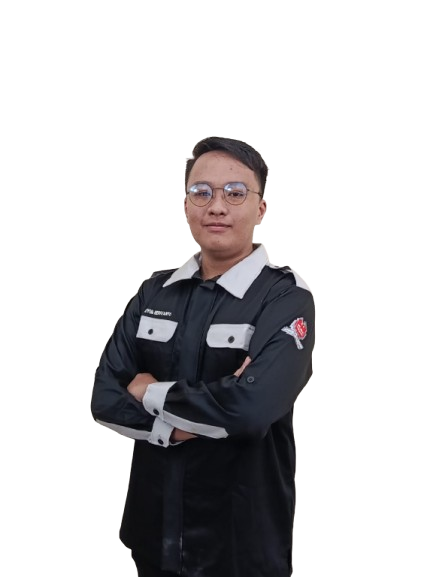
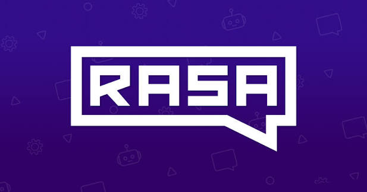
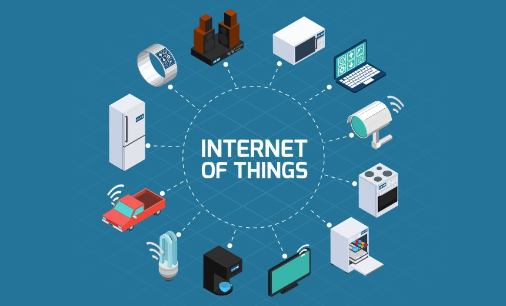

Computer Engineering student at Politeknik Negeri Jember.
Computer Engineering Student
IoT Engineering & Full Stack Web Dev.
Saya Aiyub Heriyanto, mahasiswa D3 Teknik Komputer di Politeknik Negeri Jember yang berfokus pada Full Stack Web Development, Internet of Things, dan Artificial Intelligence.
Rasa Framework
IoT
AI
Backend web

Current Position
Intern at Otorita IKN · Deputi Transformasi Hijau dan Digital · Direktorat Kecerdasan Buatan
01 / Profil

Internship experience at PT Universal Big Data & Otorita IKN.
Full Stack Web Development, IoT, and AI.
Membangun solusi digital dari web, data, perangkat terhubung, sampai AI.
Saya sedang menempuh Diploma 3 Teknik Komputer di Politeknik Negeri Jember. Minat utama saya berada pada pengembangan aplikasi full stack, integrasi API dan database, IoT, serta pemanfaatan AI untuk menyelesaikan masalah nyata.
Perjalanan profesional saya dimulai melalui internship 6 bulan di PT Universal Big Data. Di sana saya menjadi Team Leader untuk QuraniBot, chatbot berbasis Rasa Framework, dan ikut berkontribusi dalam tim C# web scraping menggunakan Nobox.
02 / Skill Focus
Area teknis yang sedang saya bangun dengan serius.
Full Stack Web Development
Membangun frontend, backend, integrasi API, database, dan alur aplikasi yang siap digunakan.
Internet of Things
Mengeksplorasi perangkat terhubung, data sensor, dan cara mengubah konektivitas menjadi solusi digital.
Artificial Intelligence
Mempelajari penerapan AI, chatbot, otomasi, dan solusi cerdas yang bisa mendukung pengambilan keputusan.
Team Coordination
Berpengalaman memimpin tim kecil, mengatur proses pengembangan, dan menjaga komunikasi proyek tetap jelas.
03 / Experience
Aug 2026 - December 2026 · 5 months
Artificial Intelligence Intern
Penajam Paser Utara, East Kalimantan, Indonesia · On-site
Mengembangkan pemahaman tentang penerapan teknologi, software, dan solusi digital di lingkungan transformasi hijau dan digital.
Kerja tim · Komunikasi · Artificial Intelligence · Digital Solutions
Dec 2022 - May 2023 · 6 months
Student Intern
Ruko Modern Kav A16-A17, Tasikmadu, Lowokwaru, Malang, Jawa Timur · On-site
Menjadi Team Leader untuk team chatbot QuraniBot dan menjadi bagian dari team scrapping marketplace menggunakan Nobox.
C# · Python · Rasa Framework · Team Leadership · Web Scraping
04 / Projects
Proyek dan pengalaman yang membentuk cara saya bekerja.

Chatbot · Team Leadership
QuraniBot with Rasa Framework
Chatbot yang dikembangkan saat internship di PT Universal Big Data. Saya mengambil peran Team Leader, mengoordinasikan proses pengembangan, kolaborasi tim, dan arah teknis proyek.
Rasa
Chatbot
NLP
Leadership
.jpg)
Data Development
Web Scraping with Nobox
Kontribusi dalam tim scraping berbasis C# untuk memperkuat pengalaman pada pengolahan dan otomasi data.

Exploration
Connected Digital Solutions
Eksplorasi sistem backend, frontend, API, database, dan perangkat terhubung untuk kebutuhan dunia nyata.
05 / Contact